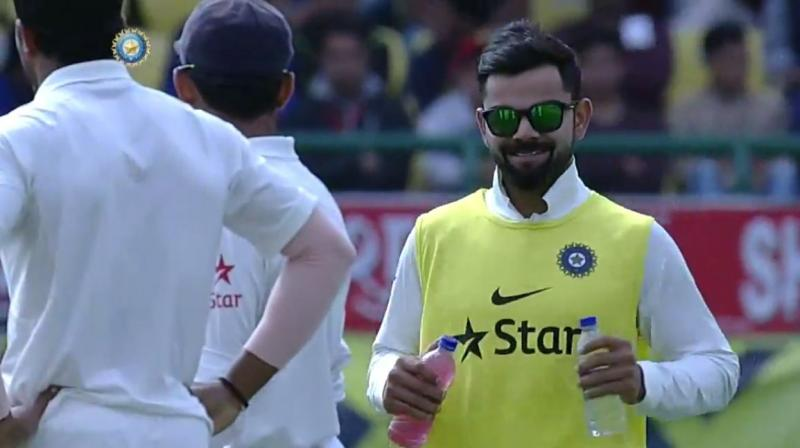
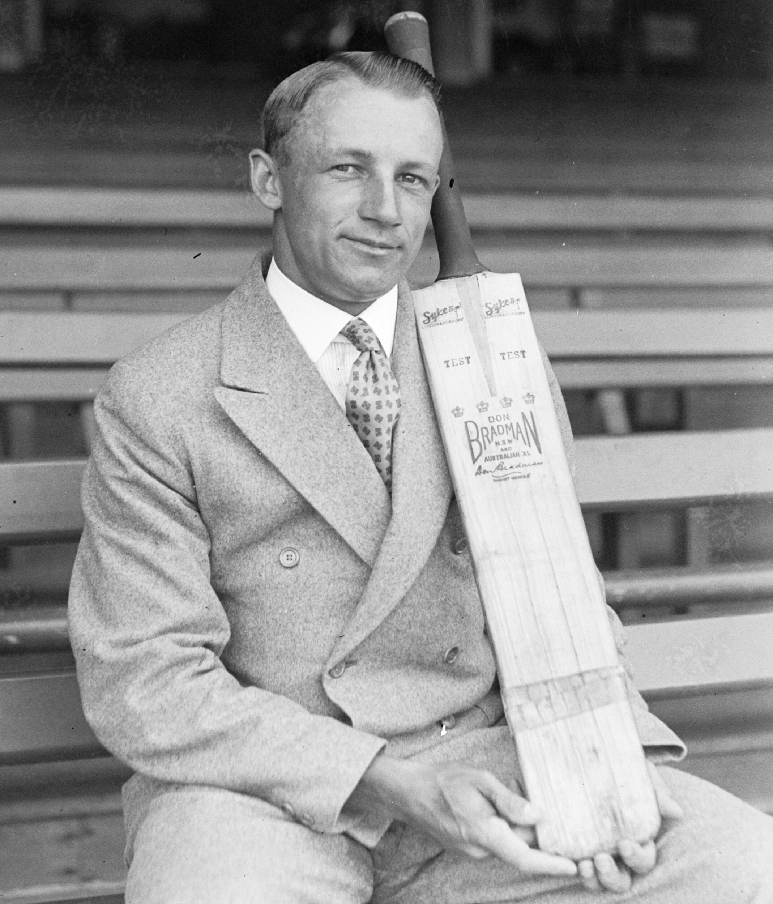

The Glorified Waiter: Carrying Drinks and Dreams
Imagine this: You have sacrificed your entire childhood, spent thousands of hours bleeding and sweating in the sun, sacrificed your education, and battled past millions of other talented youngsters to finally earn the coveted blue jersey of the Indian cricket team. You are statistically one of the 15 best cricket players in a nation of 1.4 billion people.
And your job on match day? Carrying water bottles. Mixing electrolyte powders. Running out to the middle of the pitch with a fresh towel and five different pairs of gloves so the superstar batsman can choose one. You are, for all practical purposes visible to the camera, a glorified waiter in a designer sports kit.
This is the harsh, unfiltered reality of being the 12th man in international cricket. It is a role steeped in extreme irony. You have reached the absolute pinnacle of your profession, yet your daily tasks resemble those of an unpaid intern.
The Psychological Torture of Being "Almost There"

The physical labor of being a reserve player is nothing compared to the psychological toll it exacts. Professional athletes are driven by an obsessive need to compete. They are alpha personalities who thrive under the bright lights and the pressure of a packed stadium.
To sit on a padded chair in the dressing room balcony for eight straight hours, watching your teammates live out the very dream you are desperate for, requires an immense amount of mental fortitude. You hear the crowd roaring, but the roar isn't for you. You see the TV cameras panning across the dugout, and you know your family back home is watching you sip a Gatorade, knowing you won't touch a bat or a ball all day.
There is a unique kind of pain in being "almost there." It is the pain of Sanju Samson, who traveled with the Indian team for years, playing one match, sitting out twenty, constantly packing and unpacking his kitbag without unzipping it. It is the pain of Kuldeep Yadav during the phase where he was benched for months, traveling to England, Australia, and South Africa just to bowl in the practice nets.
The Unseen Labor in the Nets
When the camera turns off, the real grueling work of the 12th man begins. While the playing XI recovers from a tough match with ice baths and massages, the reserve players are dragged to the stadium the very next morning for optional practice sessions.
Their job? To serve as highly skilled practice fodder. If the playing XI's star batter needs to practice against left-arm spin, the reserve left-arm spinner will bowl to him for two straight hours under the scorching sun. If the captain needs to practice playing short balls, the reserve fast bowler will bang the ball in short until his shoulders scream in agony.
You are essentially exhausting your body and risking injury not to win a match, but to help someone else win the match. It takes a profound level of selflessness-or extreme desperation-to do this day in and day out without losing your mind.
The Sudden Shock of Substitution Fielding

The most terrifying aspect of being the 12th man is the sudden, jarring transition from deep relaxation to maximum pressure. You might be sitting in the dressing room AC, eating a sandwich and joking with the physio. Suddenly, the starting fast bowler pulls a hamstring.
The coach points at you. "Get out there."
You have exactly thirty seconds to put down your sandwich, throw on your cap, and sprint onto a field where 50,000 people are screaming. Your muscles are cold. Your mind isn't in the game. And the very first ball you are on the field, the opposition batter smashes a fierce hook shot directly toward you at deep square leg.
If you drop it, the internet will tear you apart. You will be branded a liability. If you catch it, you get a quick high-five, your name might briefly flash on the screen, and the scorecard will read: "c (sub) b Bumrah." You don't even get your full name in the permanent historical record. You are just "(sub)".
Why You Must Always Smile Through the Pain
In modern sports culture, team harmony is prioritized above all else. The dressing room is meant to be a sanctuary of positive energy. This creates an incredibly toxic dynamic for the benched player. You are deeply hurt, frustrated, and angry that you aren't playing. You believe you are better than the guy who took your spot.
But you cannot show a single ounce of that frustration. If you look grumpy on the balcony, the media will accuse you of creating a toxic environment. If you don't cheer loudly when the man who took your spot scores a century, you are labeled a selfish player. You are forced to put on a mask of extreme happiness, celebrating the success of the people who are directly blocking your career progression.
It is emotional acting of the highest order. Every time you run out with a bottle of water, you must do it with a smile, patting your teammate on the back, offering words of encouragement, while a voice in your head screams: "That should be me out there."
The Invisible Hierarchy of the Dressing Room
Make no mistake, there is a clear hierarchy in every professional sports dressing room, and the 12th man sits firmly at the bottom of the active roster. When the team wins a major trophy, the playing XI are the ones interviewed. They are the ones who get the brand endorsements. They are the ones who secure their financial futures.
The reserve players are often relegated to the background of the celebration photos. Yet, they are expected to train exactly as hard, follow the exact same strict diets, and be away from their families for the exact same amount of time as the superstars.
The next time you watch a cricket match and see a young player jogging onto the field carrying six water bottles and a towel, don't just see a water boy. See a world-class athlete fighting a silent mental battle, waiting desperately for the day they finally get to drop the bottles and pick up the bat.
Frequently Asked Questions
What exactly does a 12th man do in cricket?
The primary roles of the 12th man include carrying drinks, fresh towels, and replacement equipment (bats, gloves, helmets) onto the field during breaks. They also substitute for injured players on the field and help the coaching staff in the dressing room.
Can a 12th man bat or bowl during a match?
Under traditional ICC rules, a 12th man can only field. They are not allowed to bat, bowl, or captain the team. However, under the new Concussion Substitute rule introduced recently, a designated like-for-like player can act as a full replacement and is allowed to bat and bowl.
Do reserve players get paid the same match fee as playing 11?
No. In the BCCI structure, players in the playing XI receive 100% of the match fee (e.g., 15 Lakhs for a Test match), while the non-playing squad members (the bench/12th man) usually receive 50% of the match fee for that game.
Is being the 12th man considered an insult?
Not at all. In a country of 1.4 billion people, making it to the 15-man national squad is an incredible achievement that demands immense respect. However, the psychological frustration of being constantly benched can be very challenging for elite competitors.
Can a substitute fielder take a catch?
Yes! A substitute fielder can take catches, affect run-outs, and stop boundaries. Their fielding contributions are fully recognized, though the catches go into their individual fielding statistics, not the original player's.
Who was the most famous substitute fielder in cricket?
Gary Pratt is famously remembered for his role as a substitute fielder during the 2005 Ashes series, where he spectacularly ran out Australian captain Ricky Ponting. The run-out caused massive controversy and anger from the Australians regarding the tactical use of substitute fielders.